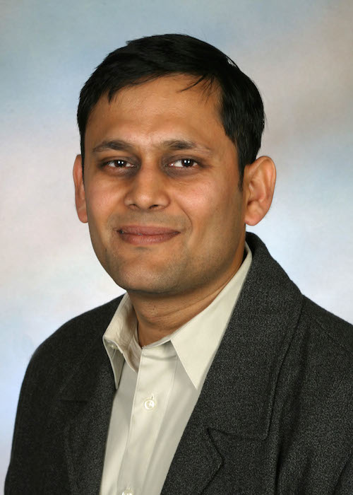

Information
This workshop will bring together researchers in theoretical foundations of parallel and distributed computing for a discussion of recent progress and directions for future research in modeling and algorithms for modern massively parallel computational systems (such as Hadoop/MapReduce/Storm/Spark, etc.) The workshop will be primarily focused on theoretical aspects of such systems, including a comprehensive overview of their power and limitations. It will bring an uninitiated researcher from the STOC and SPAA community up to speed with the key results and challenges in the area, while also illustrating connections with other established areas in massive data processing (streaming, sublinear algorithms, etc.) We also expect this workshop to be of interest to a broader audience and in particular to researchers working in related areas where algorithms for big data are known to be impactful: machine learning, optimization, image and streaming data processing, etc.
- When?
09:00 – 17:00, Sunday, June 14, 2015. - Where?
ACM FCRC 2015, Oregon Convention Center, Portland, OR. - What?
See the schedule and the list of speakers. - Background? We will welcome researchers who are interested in theoretical foundations of distributed computing regardless of the background. No prior knowledge is required, although we recommend to read this blog post for a gentle introduction to theoretical modeling of massively parallel computation.
- Do I need to register?
No separate registration is required for the workshop.
Tweet
Schedule
-
09:00 – 09:45
Introduction
-
09:45– 10:30
Krzysztof Onak (IBM T.J. Watson Research Center)
Parallel Algorithms for Graphs on a Very Large Number of NodesThe research on parallel algorithms for modern massive computation systems has identified minimizing the number of computation rounds as one of the main challenges. In the case of graph algorithms, it has encountered a natural barrier in the form of the connectivity problem. This problem is widely believed to require a large, super-constant number of computation rounds if the number of nodes is significantly larger than the amount of memory of a single machine. Moreover, a lower bound on the number of computation rounds for connectivity would imply a similar lower bound for a number of graph problems.
I will present a few graph algorithms that require a constant number of computation rounds as long as the number of nodes is at most polynomially larger than the amount of memory of a single machine. The algorithms either take advantage of a natural assumption on the input data or solve a slightly relaxed version of the problem. The set of applied techniques ranges from geometric random partitioning to graph exploration methods developed for sublinear-time algorithms.
(The talk will include results obtained in collaboration with Alexandr Andoni, Jakub Łącki, Aleksander Mądry, Slobodan Mitrović, Aleksandar Nikolov, Piotr Sankowski, and Grigory Yaroslavtsev.) -
10:30– 11:00
Ravi Kumar (Google Research, Mountain View)
Scalable Correlation ClusteringThe goal in correlation clustering is, given a graph with signed edges, cluster the nodes to minimize the number of disagreements. This is a well-studied problem with applications in machine learning and social network analysis. We present a new approximation algorithm for correlation clustering that is easily implementable in computational models such as MapReduce and streaming, and runs in a small number of rounds.
Joint work with Flavio Chierichetti and Nilesh Dalvi -
11:00 – 11:30
Coffee Break
-
11:30 – 12:15
Nina Balcan (Carnegie Mellon University)
Distributed Machine Learning
We consider the problem of learning from distributed data and analyze fundamental algorithmic and communication complexity questions involved. Broadly, we consider a framework where information is distributed between several locations, and our goal is to learn a low-error hypothesis with respect to the overall data by using as little communication, and as few rounds of communication, as possible. As an example, suppose k research groups around the world have collected large scientific datasets, such as genomic sequence data or sky survey data, and we wish to perform learning over the union of all these different datasets without too much communication.
In this talk, I will first discuss a general statistical or PAC style framework for analyzing communication complexity issues involved when doing distributed supervised machine learning, i.e., learning from annotated data distributed across multiple locations. I will discuss general lower bounds on the amount of communication needed to learn a given class and broadly-applicable techniques for achieving communication-efficient learning, as well as efficient learning algorithms with especially good communication performance for specific interesting classes.
I will also discuss algorithms with good communication complexity for unsupervised learning and dimensionality reduction problems, with interesting connections to efficient distributed coreset construction. -
12:15 – 14:00
Lunch Break
-
14:00 – 14:45
Paul Beame (University of Washington)
TBDTBD
-
14:45 – 15:30
Vahab Mirrokni (Google Research, NYC)
Randomized Composable Core-sets for Distributed ComputationAn effective technique for solving optimization problems over massive data sets is to partition the data into smaller pieces, solve the problem on each piece and compute a representative solution from it, and finally obtain a solution inside the union of the representative solutions for all pieces. Such an algorithm can be implemented easily in 2 rounds of MapReduces or be applied in an streaming model. This technique can be captured via the concept of {\em composable core-sets}, and has been recently applied to solve diversity maximization problems as well as several clustering problems. However, for coverage and submodular maximization problems, impossibility bounds are known for this technique. In this talk, after a initial discussion about this technique and applications in diversity maximization and clustering problems, we focus on the submodular maximization problem, and show how to apply a randomized variant of composable core-set problem, and achieve 1/3-approximation for monotone and non-montone submodualr maximization problems. We prove this result by applying a simple greedy algorithm and show that a large class of algorithms can be deployed in this framework. Time-permitting, we show a more involved algorithm that achieves 54% of the optimum in two rounds of MapReduces.
The main part of the talk is to appear in STOC 2015 and is a joint work with Morteza ZadiMoghaddam. The initial parts are from two recent papers that appeared in PODS 2014 and NIPS 2014. -
15:30 – 16:00
Coffee Break
-
16:00 – 16:45
Benjamin Moseley (Washington University, St. Louis)
Sample and Prune: An Efficient MapReduce Method for Submodular OptimizationMapReduce has been widely considered for optimizing submodular functions over large data sets and several techniques have been developed. In this talk, we will discuss the Sample and Prune procedure. Sample and Prune is a distributed sampling method used to efficiency discover a small set of representative elements from a large data set. We discuss how Sample and Prune can be used for submodular optimization in MapReduce. In particular, we show how this procedure can be utilized to simulate a class of greedy sequential algorithms for submodular optimization in MapReduce. We will further discuss its use to construct new distributed algorithms for submodular optimization and how it could possibly be extended to construct efficient algorithms for a wide range of problems in the distributed setting.
-
16:45 – 17:00
Q&A + Discussion
Speakers
-
Nina Balcan (Carnegie Mellon University)
Maria Florina Balcan is an Associate Professor in the School of Computer Science at Carnegie Mellon University. Her main research interests are machine learning, computational aspects in economics and game theory, and algorithms. Her honors include the CMU SCS Distinguished Dissertation Award, an NSF CAREER Award, a Microsoft Faculty Research Fellowship, a Sloan Research Fellowship, and several paper awards. She is currently a board member of the International Machine Learning Society and was recently Program Committee Chair for COLT 2014.
-
Paul Beame (University of Washington)
Paul Beame is a Professor in the Department of Computer Science & Engineering at the University of Washington. Paul received his B.Sc. in Mathematics in 1981, an M.Sc. in Computer Science in 1982, and Ph.D. in Computer Science in 1987, all from the University of Toronto. He was a Post-doctoral Research Associate at M.I.T. for the 1986-87 academic year and joined the University of Washington in 1987. Paul's research is concerned primarily with computational complexity. His main interest is in proving lower bounds on the resources needed for solving computational problems. Such topics include communication complexity, time-space tradeoff lower bounds, proof complexity, and data structures. In addition, Paul is interested in problems related to formal reasoning and verification. He has worked on the application and extension of the techniques of symbolic model checking for the verification of software specifications.
-
Ravi Kumar (Google Research, Mountain View)
Ravi Kumar has been a senior staff research scientist in Google since 2012. Prior to this, he was a research staff member at the IBM Almaden Research Center and a principal research scientist at Yahoo! He obtained his PhD in Computer Science from Cornell University in 1998. His primary interests are web and data mining, social networks, algorithms for large data sets, and theory of computation.
-
Vahab Mirrokni (Google Research, NYC)
Vahab Mirrokni is a Senior Staff Research Scientist, heading the algorithms research group at Google Research, New York. He received his PhD from MIT in 2005 and his B.Sc. from Sharif University of Technology in 1999. He joined Google Research in New York in 2008, after spending a couple of years at Microsoft Research, MIT and Amazon.com. He is the co-winner of a SODA05 best student paper award and ACM EC08 best paper award. His research areas include algorithms, algorithmic game theory, combinatorial optimization, and social networks analysis. At Google, he is mainly working on algorithmic and economic problems related to search and online advertising. Recently he is working on online ad allocation problems, distributed algorithms for large-scale graph mining, and mechanism design for advertising exchanges.
-
Benjamin Moseley (Washington University, St. Louis)
Benjamin Moseley joined the Department of Computer Science & Engineering at Washington University in St. Louis in July 2014. Previously, Professor Moseley was a Research Assistant Professor at the Toyota Technological Institute at Chicago from 2012-2014. Prior to that, he was a visiting professor at Sandia National Laboratories in 2013 and a research intern at Yahoo! Research in 2010 and 2011.
Professor Moseley received the Best Paper Award at the 2015 International Parallel and Distributed Processing Symposium (IPDPS), Best Paper Award at the 2013 Symposium on Parallelism in Algorithms and Architectures (SPAA) and Best Student Paper Award at the 2010 Symposium on Discrete Algorithms (SODA).
Professor Moseley's research interests are broadly focused in the field of theoretical computer science. Specifically, he is interested in the design, analysis and limitations of algorithms. He is also interested in the applications of algorithms. Recently, his work has focused on problems arising in resource allocation, large data analysis and sustainable computing.
-

Krzysztof Onak (IBM T.J. Watson Research Center)
Krzysztof Onak is a computer scientist who works at the IBM T.J. Watson Research Center near Yorktown Heights, NY. He is interested in computation with limited resources, including sublinear-time algorithms, streaming algorithms, and algorithms for modern parallel systems. Krzysztof received his Master's degree from the University of Warsaw and his PhD from the Massachusetts Institute of Technology. Before joining IBM, he was a Simons Postdoctoral Fellow at Carnegie Mellon University.
Organizers and Support
Organizers:
-

Ashish Goel (Stanford University)
Ashish Goel is a Professor of Management Science and Engineering and (by courtesy) Computer Science at Stanford University, and a member of Stanford's Institute for Computational and Mathematical Engineering. He received his PhD in Computer Science from Stanford in 1999, and was an Assistant Professor of Computer Science at the University of Southern California from 1999 to 2002. His research interests lie in the design, analysis, and applications of algorithms; current application areas of interest include social networks, participatory democracy, Internet commerce, and large scale data processing. Professor Goel is a recipient of an Alfred P. Sloan faculty fellowship (2004-06), a Terman faculty fellowship from Stanford, an NSF Career Award (2002-07), and a Rajeev Motwani mentorship award (2010). He was a co-author on the paper that won the best paper award at WWW 2009, and an Edelman Laureate in 2014.
Professor Goel was a research fellow and technical advisor at Twitter, Inc. from July 2009 to Aug 2014.
-

Sergei Vassilvitskii (Google Research, NYC)
Sergei Vassilvitskii is a Research Scientist at Google New York. Previously he was a Research Scientist at Yahoo! Research and an Adjunct Assistant Professor at Columbia University. He completed my PhD at Stanford Universty under the supervision of Rajeev Motwani. Prior to that he was an undergraduate at Cornell University.
-

Grigory Yaroslavtsev (University of Pennsylvania)
Grigory Yaroslavtsev is a postdoctoral fellow at the Warren Center for Network and Data Sciences.He was previously a Postdoctoral Fellow in Mathematics at Brown University, ICERM. He received his Ph.D. in Theoretical Computer Science in 2013 from Pennsylvania State University and an M.Sc. in Applied Mathematics and Physics from the Academic University of the Russian Academy of Sciences in 2010.
Grigory works on efficient algorithms for sparsification, summarization and testing properties of large data, including approximation, parallel and online algorithms, learning theory and property testing, communication and information complexity and private data release.